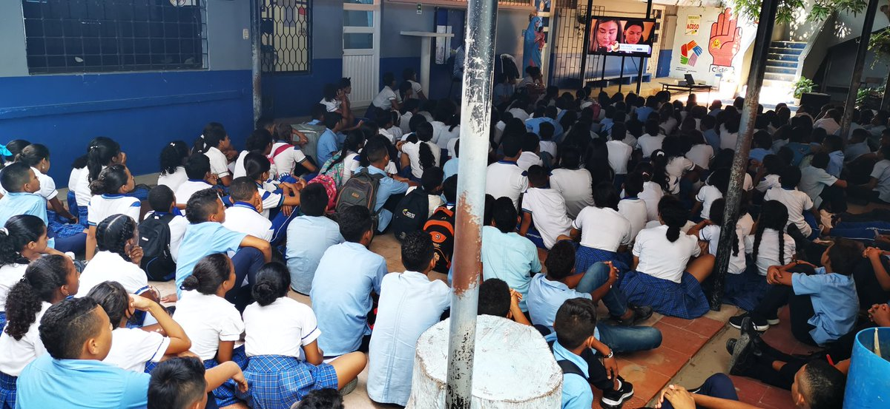

I.E.D. Tercera Mixta Fundación
"Con Fe y Amor construiremos un Mundo Mejor"


"Con Fe y Amor construiremos un Mundo Mejor"


La Institución Educativa Ejemplar es reconocida por su compromiso con la excelencia académica y el desarrollo integral de sus estudiantes. Contamos con un equipo docente altamente calificado y programas educativos que promueven el crecimiento intelectual, emocional y social de los jóvenes.
Ver masFundada en 1995, nuestra institución ha crecido desde una pequeña escuela local hasta convertirse en una referencia educativa a nivel nacional. Con más de 25 años de experiencia, hemos formado a miles de estudiantes que hoy destacan en diferentes áreas profesionales.
Ver masUn enfoque lúdico para los primeros años de vida escolar, fomentando la creatividad y el aprendizaje a través del juego.
Ver masUna base sólida en matemáticas, lectura, ciencias y estudios sociales para formar estudiantes curiosos y comprometidos.
Ver masEnfocado en el pensamiento crítico, la preparación para la vida universitaria y el desarrollo de habilidades interpersonales.
Ver masOfrecemos orientación vocacional y preparación académica avanzada para asegurar el éxito en estudios superiores.
Ver masNuestras instalaciones están diseñadas para proporcionar un ambiente de aprendizaje óptimo. Contamos con:
La admisión a nuestra institución se basa en un enfoque inclusivo y orientado a la diversidad. Nuestro proceso incluye:
Para más información sobre los requisitos de admisión y fechas importantes, contáctanos a través del formulario o visita nuestras oficinas.